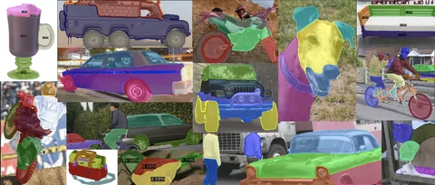
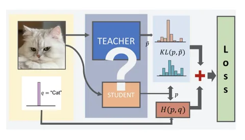

The Llama 4 Herd: Architecture, Training, Evaluation, and Deployment Notes
Technical report, 2026

Research Scientist · Meta Superintelligence Labs
I am on the multimodal pretraining team, building the next generation of Muse Spark.
I received my Ph.D. in Computer Science from UT Austin, advised by Prof. Philipp Krähenbühl. Before that, I received my B.S. from Cornell University, where I worked with Prof. Bharath Hariharan and Prof. Kavita Bala. I have previously worked at Meta FAIR and NVIDIA.
2026
Technical report, 2026
2025

NeurIPS 2025 Spotlight · *Joint first authors

NeurIPS 2025 Oral · *Joint first authors


2024

2023

2022


2021

2019
